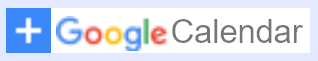

琴海りおイベント情報サイト
今後のスケジュール
を押すとご自分のGoogleアカウントにスケジュールを同期できます。
プロフィール
琴海りお
- 女優、元アイドル
- ミスiD2019小林司賞 受賞
- 生年月日：1996年08月06日
- 血液型：A型
- 出身：山形県🍒
- 特技 ：麻雀、モールス信号(元自衛隊員)
出演
- テレビドラマ、映画:「咲-Saki-阿知賀編 episode of side-A」安河内美子 役
- バラエティ:「悩める前職：アイドルちゃん～アイドルやめて何するの？～」
- WEB番組:「キラキラヒカレ！」(WALLOP)
- ...etc